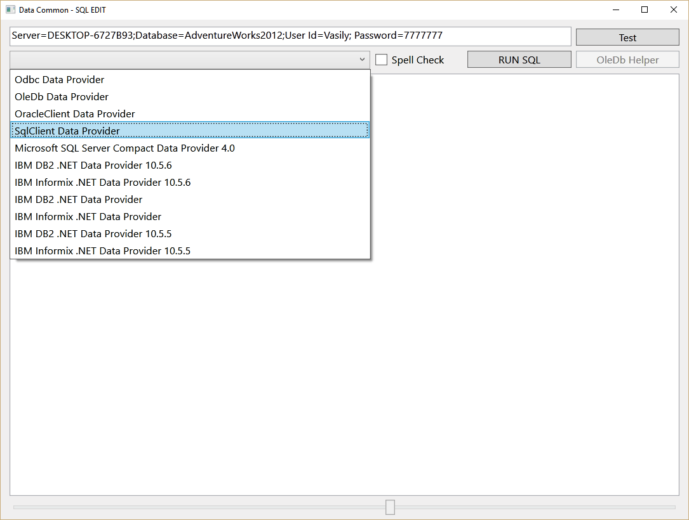
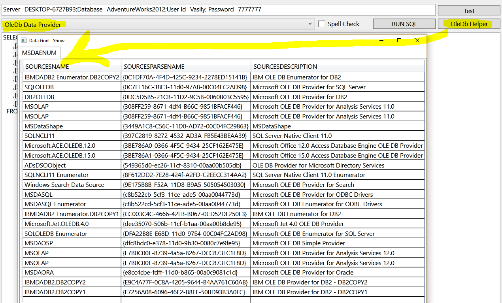
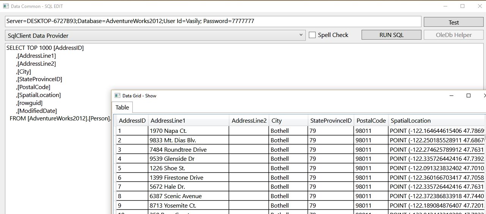
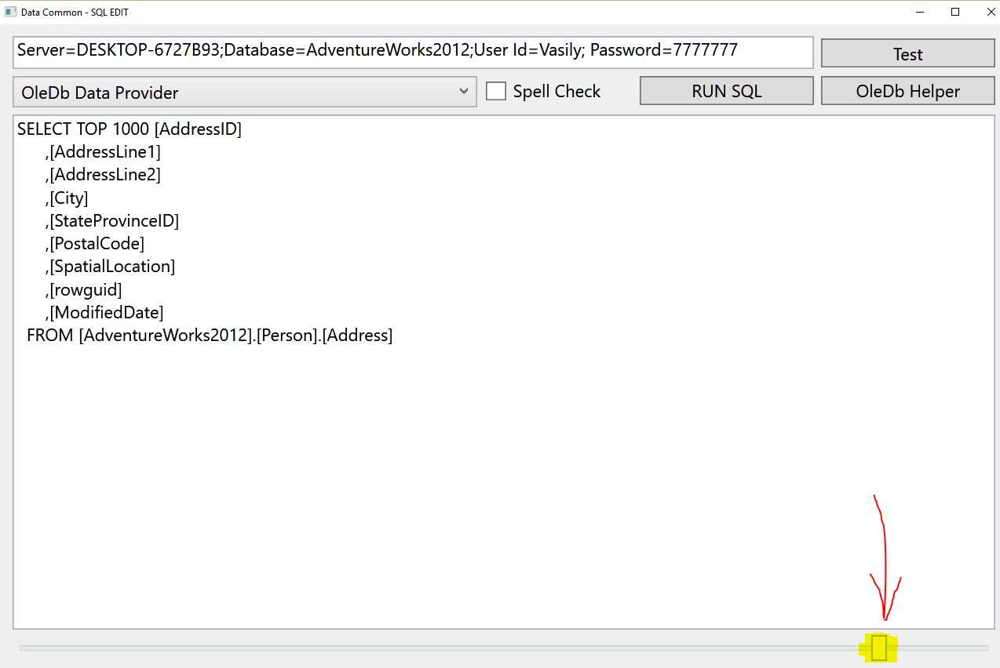

Access to ANY Data Base by System.Data.Common - F# (Fsharp) only.
WPF F# (F sharp only ) complex solution with MAIN project and USER library . All only F# + XAML (no partition class, No third party dll's). Example show how to use User Control inside another User Control. How to build Window Application...
How to Access to DataBase by System.Data.Common.
How to Events,member, WPF F# only, Data.Common, OleDb, ODBC...
I built a snippet for prospective developers. In fact how to easily get a connection to a database using System.Data.Common . This approach allow you to have connection to Data Base using only one class in my example DataCommonFsharp.fs
One application/edit – ALL DataBase.
Run application … choose provider (ComboBox includes all providers which installed on your PC).

If you select “OleDB” you can use [OleDb Helper] for bring all OleDb providers which was installed on your PC.

[Test] - allow you to test connection string - if needed ... For Run SQL just [RUN SQL]

Use slider for adjust window(s) size - it allow you adjust size between 50...200%

<UserControl
xmlns="http://schemas.microsoft.com/winfx/2006/xaml/presentation"
xmlns:x="http://schemas.microsoft.com/winfx/2006/xaml"
xmlns:mc="http://schemas.openxmlformats.org/markup-compatibility/2006"
xmlns:d="http://schemas.microsoft.com/expression/blend/2008"
x:Name="DataCommonFsharp"
mc:Ignorable="d"
d:DesignHeight="600" d:DesignWidth="800" >
<Grid x:Name="gridMain" RenderTransformOrigin="0.0,0.0" MinWidth="600" MinHeight="400">
<TextBox x:Name="txtSQL" TextWrapping="Wrap" Text="Insert/Edit SQL" Margin="10,63,10,27" IsManipulationEnabled="True" IsInactiveSelectionHighlightEnabled="True" AcceptsReturn="True" />
<TextBox x:Name="txtConnectionString" Height="23" Margin="10,8,136,0" TextWrapping="Wrap" Text="Connection String" VerticalAlignment="Top"/>
<ComboBox x:Name="comboProvider" Margin="10,36,370,0" VerticalAlignment="Top"/>
<Button x:Name="btnOleDbHelper" Content="OleDb Helper" HorizontalAlignment="Right" Margin="0,36,10,0" VerticalAlignment="Top" Width="121" IsCancel="True" IsEnabled="False"/>
<Button x:Name="btnRUN" Content="RUN SQL" HorizontalAlignment="Right" Margin="0,36,136,0" VerticalAlignment="Top" Width="121" IsCancel="True"/>
<CheckBox x:Name="chkSpell" Content="Spell Check" HorizontalAlignment="Right" Margin="0,39,271,0" VerticalAlignment="Top" Width="94"/>
<Button x:Name="btnTest" Content="Test" HorizontalAlignment="Right" Margin="0,10,10,0" VerticalAlignment="Top" Width="121" IsCancel="True" ToolTip="Test Connection String."/>
<Slider x:Name="slider" Margin="10,0" VerticalAlignment="Bottom" Height="23" Maximum="200" Value="100" SmallChange="1" LargeChange="10" Minimum="50"/>
</Grid>
<UserControl.LayoutTransform>
<ScaleTransform x:Name="scaleXY" ScaleX="1.0" ScaleY="1.0" />
</UserControl.LayoutTransform>
</UserControl>
namespace DataCommonFsharp open System open System.Collections.Generic open System.Collections.ObjectModel open System.Linq open System.Net open System.Windows open System.Windows.Controls open System.Windows.Documents open System.Windows.Input open System.Windows.Media open System.Windows.Media.Imaging open System.Windows.Media.Animation open System.Windows.Shapes open System.Windows.Threading open System.Data open System.Text open System.IO open System.Windows.Markup open System.Xaml open System.Reflection open Utilities open DataCommonFsharp type DataCommonFsharp() as this = inherit UserControl() // XAML file properties -> "EmbeddedResource" let mySr = new StreamReader(Assembly.Load("FsharpObjXAMLLibrary").GetManifestResourceStream("DataCommonFsharp.xaml")) // XAML - MUST be Embedded Resource do this.Content <- XamlReader.Load(mySr.BaseStream):?> UserControl // Load XAML // OR Change XAML file properties to "Resource" and uncomment below (comment out above) // // XAML file properties -> Resource // let resource = new Uri("/FsharpObjXAMLLibrary;component/DataCommonFsharp.xaml",System.UriKind.Relative) // do <- Application.LoadComponent(resource) :?> UserControl // Cast to UserControl let mutable txtSQL : TextBox = this.Content?txtSQL let mutable txtConnectionString : TextBox = this.Content?txtConnectionString let mutable comboProvider : ComboBox = this.Content?comboProvider let mutable btnOleDbHelper : Button = this.Content?btnOleDbHelper let mutable btnRUN : Button = this.Content?btnRUN let mutable chkSpell : CheckBox = this.Content?chkSpell let mutable btnTest : Button = this.Content?btnTest let mutable scaleXY : ScaleTransform = this.Content?scaleXY let mutable slider : Slider = this.Content?slider let mutable sh : ShowData = new ShowData() let dc = new DataCommon() do btnOleDbHelper.ToolTip <- "Show OleDb data providers which installed on YOUR PC." do comboProvider.ToolTip <- "Show ALL data providers which installed on YOUR PC." // Init combo box providers do comboProvider.DisplayMemberPath <- "Name" do comboProvider.SelectedValuePath <- "InvariantName" do comboProvider.ItemsSource <- (dc.GetAllProviders()).DefaultView; let runDS() = dc.GetDataSet(comboProvider.SelectedValue, txtConnectionString.Text, new StringBuilder(txtSQL.Text) ) let showData(ds:DataSet) = async { do sh <- new ShowData() do sh.ChangedScale(slider.Value) do sh.Owner <- Application.Current.MainWindow // window be on top of all other windows do sh.Show() if dc.StrError = "" then do sh.InitGrid(ds) else do sh.InitGridError(dc.StrError) } let comboSelected() = let s = comboProvider.SelectedValue.ToString() if s.IndexOf("OleDb") >= 0 then do btnOleDbHelper.IsEnabled <- true else do btnOleDbHelper.IsEnabled <- false let testConnection() = async { do sh <- new ShowData() do sh.ChangedScale(slider.Value) do sh.Owner <- Application.Current.MainWindow // window be on top of all other windows do sh.Show() if dc.TestConnection(comboProvider.SelectedValue, txtConnectionString.Text) then do sh.InitGridError("Connection String - OK") else do sh.InitGridError(dc.StrError) ignore() } let changedScale() = do scaleXY.ScaleX <- slider.Value / 100.0 do scaleXY.ScaleY <- slider.Value / 100.0 do sh.ChangedScale(slider.Value) do slider.ValueChanged.Add(fun _ -> changedScale()) do this.Unloaded.Add(fun _ -> dc.CloseConnection()) do comboProvider.SelectionChanged.Add(fun _ -> comboSelected()) do chkSpell.Checked.Add(fun _ -> do txtSQL.SpellCheck.IsEnabled <- true ) do chkSpell.Unchecked.Add(fun _ -> do txtSQL.SpellCheck.IsEnabled <- false ) do btnTest.Click.Add(fun _ -> Async.StartImmediate(testConnection())) do btnRUN.Click.Add(fun _ -> Async.StartImmediate(showData(runDS()))) do btnOleDbHelper.Click.Add(fun _ -> Async.StartImmediate(showData(dc.GetAllOldbProviders())))
<UserControl xmlns="http://schemas.microsoft.com/winfx/2006/xaml/presentation" xmlns:x="http://schemas.microsoft.com/winfx/2006/xaml" xmlns:mc="http://schemas.openxmlformats.org/markup-compatibility/2006" xmlns:d="http://schemas.microsoft.com/expression/blend/2008" x:Name="DataCommonFsharp" mc:Ignorable="d" d:DesignHeight="600" d:DesignWidth="800" > <Grid x:Name="gridMain" RenderTransformOrigin="0.0,0.0" MinWidth="600" MinHeight="400"> <TextBox x:Name="txtSQL" TextWrapping="Wrap" Text="Insert/Edit SQL" Margin="10,63,10,27" IsManipulationEnabled="True" IsInactiveSelectionHighlightEnabled="True" AcceptsReturn="True" /> <TextBox x:Name="txtConnectionString" Height="23" Margin="10,8,136,0" TextWrapping="Wrap" Text="Connection String" VerticalAlignment="Top"/> <ComboBox x:Name="comboProvider" Margin="10,36,370,0" VerticalAlignment="Top"/> <Button x:Name="btnOleDbHelper" Content="OleDb Helper" HorizontalAlignment="Right" Margin="0,36,10,0" VerticalAlignment="Top" Width="121" IsCancel="True" IsEnabled="False"/> <Button x:Name="btnRUN" Content="RUN SQL" HorizontalAlignment="Right" Margin="0,36,136,0" VerticalAlignment="Top" Width="121" IsCancel="True"/> <CheckBox x:Name="chkSpell" Content="Spell Check" HorizontalAlignment="Right" Margin="0,39,271,0" VerticalAlignment="Top" Width="94"/> <Button x:Name="btnTest" Content="Test" HorizontalAlignment="Right" Margin="0,10,10,0" VerticalAlignment="Top" Width="121" IsCancel="True" ToolTip="Test Connection String."/> <Slider x:Name="slider" Margin="10,0" VerticalAlignment="Bottom" Height="23" Maximum="200" Value="100" SmallChange="1" LargeChange="10" Minimum="50"/> </Grid> <UserControl.LayoutTransform> <ScaleTransform x:Name="scaleXY" ScaleX="1.0" ScaleY="1.0" /> </UserControl.LayoutTransform> </UserControl>
All OleDb providers ...
System.Data.OleDb.OleDbDataReader reader = System.Data.OleDb.OleDbEnumerator.GetEnumerator(Type.GetTypeFromProgID("MSDAENUM"));
This application also show "How To" load XAML file to code ...
// XAML file properties -> "EmbeddedResource"
let mySr = new StreamReader(Assembly.Load("FsharpObjXAMLLibrary").GetManifestResourceStream("DataCommonFsharp.xaml")) // XAML - MUST be Embedded Resource do this.Content <- XamlReader.Load(mySr.BaseStream):?>
UserControl // Load XAML
// OR Change XAML file properties to "Resource" and uncomment below (comment out above)
// // XAML file properties -> Resource // let resource = new Uri("/FsharpObjXAMLLibrary;component/DataCommonFsharp.xaml",System.UriKind.Relative)// do <- Application.LoadComponent(resource)
:?> UserControl // Cast to UserControl